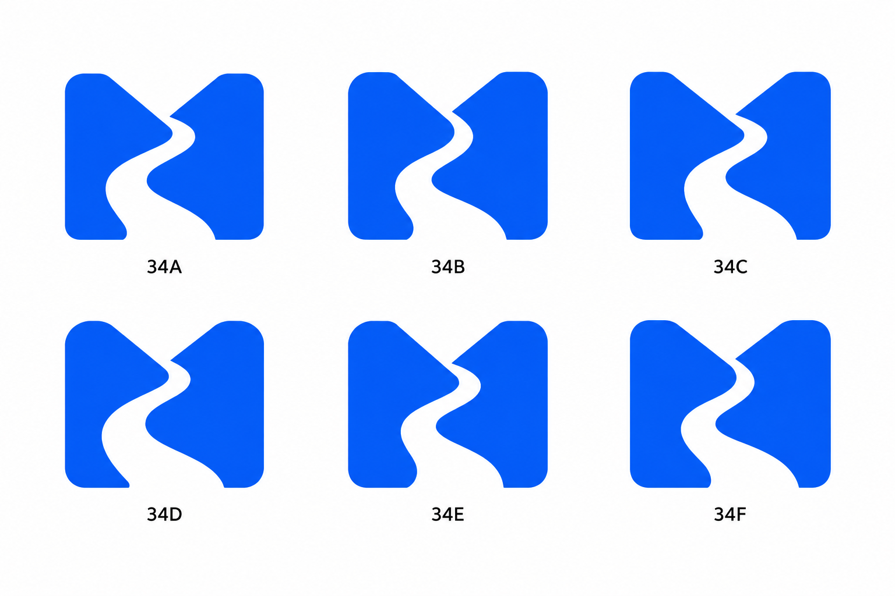
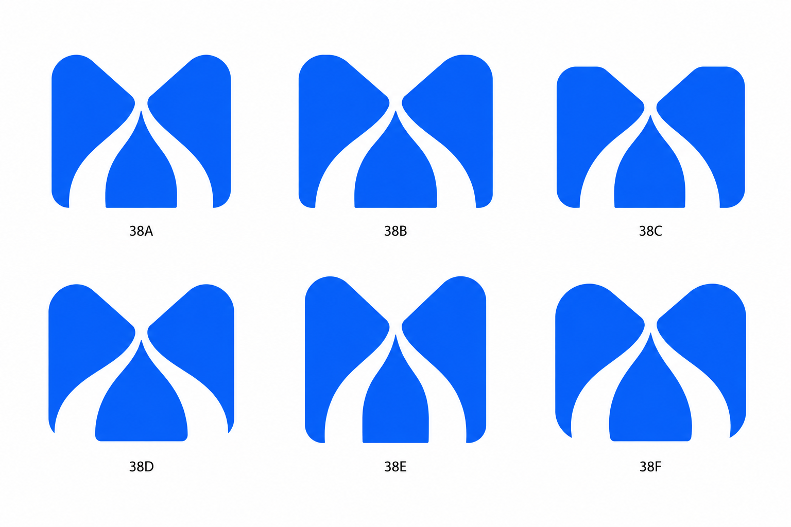
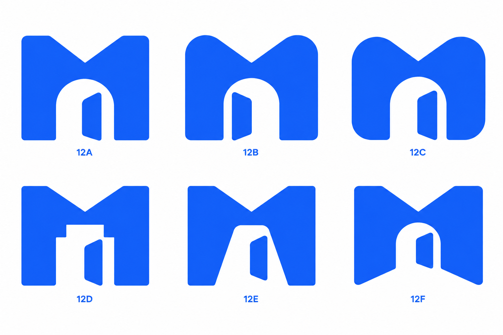
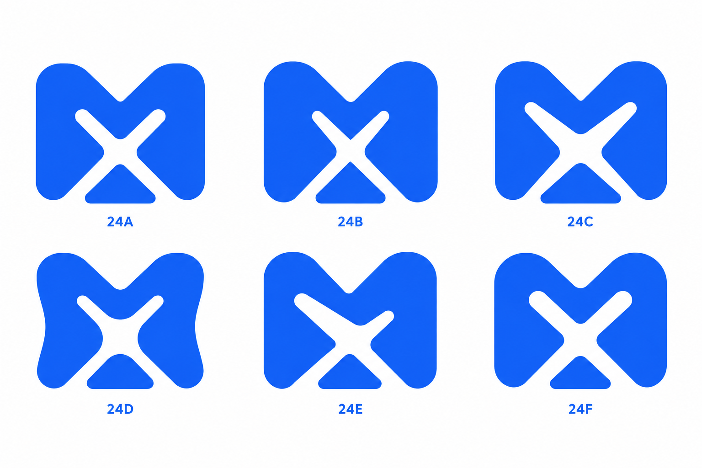

MixedRoutes / Selected directions
Your original picks, followed by six focused explorations of each. Bold M forms with meaning in the empty space.
Explore the bend, taper, and balance of the central path.

Explore how two routes meet inside the M.

Explore the entrance, shoulders, and open-door shape.

Explore crossing widths, rounded joins, and the lower wedge.
